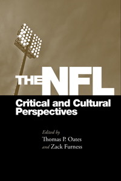

<body bgcolor="#FFFFFF" text="#000000" link="#0000FF" vlink="#CC0000" alink="#CC0000"><center><hr width="350" size="1" align="center" noshade>Critical essays on the NFL as a cultural force in the United States<hr width="350" size="1" align="center" noshade><p><a href="https://cdcshoppingcart.uchicago.edu/Cart/ChicagoBook.aspx?ISBN=9781439909577&&PRESS=temple" target="_top">Buy this book!</a> | <a href="https://cdcshoppingcart.uchicago.edu/Cart/Cart.aspx?PRESS=temple" target="_top">View Cart</a> | <a href="https://cdcshoppingcart.uchicago.edu/Cart/Cart.aspx?PRESS=temple" target="_top">Check Out</a></p><p></p></center><!--none//--><h1>The NFL</h1>
<H2>Critical and Cultural Perspectives</H2>
<H2>Foreword by Michael Oriard</H2>
<h3>edited by Thomas P. Oates and Zack Furness</h3>
<P>cloth 1-4399-0957-1 $69.50, Jun 14, <FONT COLOR=#990033>Available</FONT>
<br>paper 1-4399-0958-X $29.95, Jan 15, <FONT COLOR=#990033>Available</FONT>
<br>Electronic Book 1-4399-0959-8 $29.95 <FONT COLOR=#990033>Available</FONT>
<BR> 268 pp
6x9
</P><BLOCKQUOTE><I>"While there is a tradition of studying football critically and culturally, there has not been a volume focused in a thorough way on the NFL in the context of contemporary America. This book, the first of its kind, treads on new turf, bridging the sociology of sport and communication and sport. </I>The NFL<I> will be a landmark for future studies of the institutionalization and cultural influence of American sport leagues."</I><br>&#151<b>Lawrence Wenner</b>, Von der Ahe Professor of Communication and Ethics in the College of Communication and Fine Arts and the School of Film and Television at Loyola Marymount University in Los Angeles, and the editor of the <i>International Review of the Sociology of Sport and Communication and Sport</i></I></BLOCKQUOTE>
<P>The National Football League is one of the most significant cultural engines in contemporary American life. Yet despite intense and near ubiquitous media coverage, commentators rarely turn a critical lens on the league to ask what material and social forces have contributed to its success, and how the NFL has influenced public life in the United States.
<P>The editors of and contributors to <I>The NFL</I> examine the league as a culturally, economically, and politically powerful presence in American life. The essays explore how the NFL is packaged for commercial consumption, the league's influence on American identity, and its relationship to state and cultural militarism.
<P><I>The NFL</I> is the first collection of critical essays to focus attention on the NFL as a cultural force. It boldly moves beyond popular celebrations of the sport and toward a fuller understanding of football's role in shaping contemporary sport, media, and everyday life.
<P><I>Contributors include: David L. Andrews, Aaron Baker, Michael Butterworth, Nicholas P. Ciotola, Jacob Dittmer, Dan Grano, Samantha King, Kyle Kusz, Toby Miller, Ronald L. Mower, Dylan Mulvin, Oliver J.C. Rick, Katie Rodgers, and the editors.</I>
<BR>&nbsp;<h2>Excerpt</h2><P>Excerpt available at <a href="http://www.temple.edu/tempress">www.temple.edu/tempress</a></p>
<BR>&nbsp;<h2>Reviews</h2>
<p><i>"The National Football League continues to have a significant cultural impact on American life. But how and why has this occurred? This interesting and informative collection of critical essays does an admirable job of answering this question.... This worthwhile volume is enhanced by a comprehensive index. Summing Up: Highly recommended."</i> <br>&#151<b><i>Choice</i></b>
<p><i>"One thing that the authors in </i>The NFL<i> do so well is analyze the larger and cultural meanings of the mundane�. Authors also comprehensively study topics related to cultural themes, particularly on masculinity in the NFL�. </i>The NFL<i> describes the cultural phenomenon of the game, and sheds light on why so many Americans are enthralled with the sport. More importantly, though, it demonstrates the nexus of cultural and social politics with unarguably the most popular form of sporting entertainment in the United States. Any scholar of sport or popular culture would be remiss to not take seriously </i>The NFL<i> because, as the anthology clearly shows, the NFL remains �one of the most significant engines of contemporary culture�.�</i><br>&#151<b><i>Sport in American History </i></b>
<p><i>"The editors take an interdisciplinary cultural studies approach to critically analyze the NFL.... The anthology is a welcome addition to the extant literature and serves as an antidote to the often laudatory coverage presented by the media."</i><br>&#151<b> <i>The Journal of Sports History</i></b>
<p><i>"Oates and Furness, offers readers twelve provocative and well-researched chapters on ethical and social problems found within the National Football League�. Therefore, readers of this collection will be faced with a decision: (a) criticism, cynicism, and despair about the current state of the NFL, or (b) careful analysis, realistic hopefulness, and a reparative attitude toward how high-quality scholarship will bring about a potentially healthier and more reasonable future for the NFL.�</I> <br>&#151<b><i>American Studies, Vol. 54, No. 4</b></i>
<BR>&nbsp;<h2>Contents</h2><P>
<p>Foreword: Football as Mediated Spectacle � <i>Michael Oriard</i>
<p>Introduction: The Political Football: Culture, Critique, and the NFL � <i>Thomas P. Oates and Zack Furness</i>
<p><b>I Production, Promotion, and Control</b>
<br>1. The Greatest Game Ever Played: An NFL Origin Story � <i>Daniel A. Grano</i>
<br>2. Game Time: A History of the Managerial Authority of the Instant Replay � <i>Dylan Mulvin</i>
<br>3. The Ochocinco Brand: Social Media�s Impact on the NFL�s Institutional Control � <i>Jacob Dittmer</i>
<br>4. New Media and the Repackaging of NFL Fandom � <i>Thomas P. Oates</i>
<p><b>II Identities, Social Hierarchies, and Cultural Power</b>
<br>5. NFL Sex � <i>Toby Miller</i>
<br>6. Football and �Ghettocentric� Logics? The NFL�s Essentialist Mobilization of Black Bodies � <i>Ronald L. Mower, David L. Andrews, and Oliver J. C. Rick</i>
<br>7. �I Was a Gladiator�: Pain, Injury, and Masculinity in the NFL � <i>Katie Rodgers</i>
<br>8. Masculinity, Race, and Violence in Any Given Sunday � <i>Aaron Baker</i>
<br>9. Spignesi, Sinatra, and the Pittsburgh Steelers: Franco�s Italian Army as an Expression of Ethnic Identity, 1972�1977 � <i>Nicholas P. Ciotola</i>
<p><b>III Gridirons and Battlefields</b>
<br>10. Offensive Lines: Sport-State Synergy in an Era of Perpetual War � <i>Samantha King</i>
<br>11. NFL Films and the Militarization of Professional Football � <i>Michael L. Butterworth</i>
<br>12. For the Love of National Manhood: Excavating the Cultural Politics and Media Memorializations of Pat Tillman � <i>Kyle W. Kusz</i>
<p>Contributors
<br>Index
</P><BR>&nbsp;<H2>About the Author(s)</H2>
<P><b>Thomas P. Oates</b> is Assistant Professor of American Studies and Journalism & Mass Communication at The University of Iowa. His work on sports, media, and contemporary culture has appeared in <i>Communication and Critical/Cultural Studies</i>, <i>Sociology of Sport Journal</i>, and <i>Journal of Sport History</i>.</P>
<P><b>Zack Furness</b> is Assistant Professor of Communications at Penn State University, Greater Allegheny. He is the editor of <i>Punkademics</i> and the author of <i><a href="1899_reg.html" target="_top">One Less Car: Bicycling and the Politics of Automobility</a></i> (Temple).</P>
<BR><H2>Subject Categories</H2>
<p><A HREF="/tempress/sports.html" TARGET="_top">Sports</a>
<BR><A HREF="/tempress/cultural.html" TARGET="_top">Cultural Studies</a>
<BR><A HREF="/tempress/american.html" TARGET="_top">American Studies</a>
</p>
<BR><h2 class="inpageheading">In the series</H2>
<P><I><a href="http://www.temple.edu/tempress/sporting.html" onMouseOver="window.status='Click for other books in this series!'; return true;" onMouseOut="window.status=''; return true;" target="_top">Sporting</a></i>, edited by Amy Bass.
</p><p>As an international cultural activity for athleticism, spectatorship, and global cultural exchange, sport is unmatched by any other force on earth. And yet it remains a consistently understudied dimension of history and cultural studies. <i>Sporting</i>, edited by Amy Bass, aims to contribute to the study of sport by publishing works by people across a range of disciplines, by professional sportswriters, and by athletes to add substance to our still emerging notion of globalization.</p>
<p align="center"><a href="https://cdcshoppingcart.uchicago.edu/Cart/ChicagoBook.aspx?ISBN=9781439909577&&PRESS=temple" target="_top">Buy this book!</a> | <a href="https://cdcshoppingcart.uchicago.edu/Cart/Cart.aspx?PRESS=temple" target="_top">View Cart</a> | <a href="https://cdcshoppingcart.uchicago.edu/Cart/Cart.aspx?PRESS=temple" target="_top">Check Out</a></p><p><font face="Arial" size="1"><a href="copyright.html" onMouseOver="window.status='Web Copyright Policy';return true;" onMouseOut="window.status=''" title="Web Copyright Policy">&copy;</a> 2016 <a href="http://www.temple.edu" target="new" onMouseOver="window.status='Link to Temple University home page';return true;" onMouseOut="window.status=''" title="Link to Temple University home page">Temple University</a>. All Rights Reserved. http://www.temple.edu/tempress/titles/2245_reg.html</font></p>